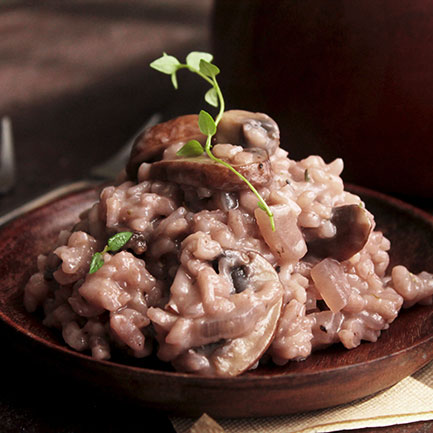

Red Wine Risotto

Description
Risotto is a creamy Italian dish that tastes a lot like the rice version of mac and cheese. Unlike other rice recipes that require simmering in a pot of water, risotto is cooked very slowly by adding 1/2 cup of liquid at a time. This process allows the rice to release its starches, creating a rich, velvety sauce with soft but slightly al dente grains.
Risotto is best enjoyed the second it comes off the stovetop; the starches begin to set as you wait, ruining that saucy goodness you worked so hard to create. But don’t worry if you made more than you planned, because those leftovers make one of our favorite recipes. Mix the extra risotto with an egg and roll it in breadcrumbs. Fry ’em up to create delicious arancini risotto balls.
Ingredients
- 2 tablespoons olive oil
- 1 ½ ounces prosciutto
- 1 large shallot, minced
- 1 clove garlic, chopped
- 2 chanterelle mushrooms, sliced
- 1 cup arborio rice
- 1 cup red wine
- 3 cups beef stock, or more as needed, divided
- ½ cup arugula
- ⅓ cup freshly grated Parmesan cheese
- 1 tablespoon chopped fresh thyme
- ground black pepper to taste
Steps
- Heat olive oil in a Dutch oven or heavy pot over medium heat; cook prosciutto until edges begin to curl and fat is rendered, 2 to 3 minutes. Add shallot and cook until fragrant, about 2 minutes. Add garlic and cook until fragrant, about 1 minute. Add mushrooms and cook for 30 seconds.
- Cook and stir rice into prosciutto mixture, stirring continually, until rice is translucent around edges, 1 to 2 minutes. Pour red wine into rice mixture; cook, stirring every 30 seconds, until wine is absorbed, about 5 minutes. Stir 1 cup broth into rice mixture, cooking and stirring until broth is almost completely absorbed, 3 to 5 minutes. Continue adding 1 cup broth at a time, stirring constantly, until rice is tender, 15 to 20 minutes.
- Mix arugula, Parmesan cheese, thyme, and black pepper into rice mixture; cook and stir until cheese is melted, 2 to 3 minutes.